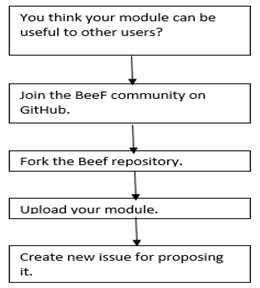

The BeEF Project
The BeEF Project
Authors: Sarah Gabriel,(SarahGabriel) Ran Itzhaki (ranitz), Itsik Rabinovitch (itzikrb100), Rivka Gehler (rivkage), Michal Seneor (michalseneor)
Introduction
BeEF is short for The Browser Exploitation Framework, a powerful professional security tool. It was founded by Wade Alcorn the NGS Security’s general manager for Asia Pacific, leaded by Christian Fricho, leader of the Perth Open Web Application Security Project and Michelle Orru a vulnerability researcher and social engineer.
What is BeEF ?
Unlike other security frameworks, BeEF focuses on leveraging browser vulnerabilities to assess the security posture of a target.
This project is developed solely for lawful research and penetration testing.
BeEF looks past the hardened network perimeter and client system, and examines exploitability within the context of the one open door: the web browser. BeEF will hook one or more web browsers and use them as beachheads for launching directed command modules and further attacks against the system from within the browser context. Each browser is likely to be within a different security context, and each context may provide a set of unique attack vectors.
The framework contains numerous command modules that employ BeEF’s simple and powerful API. This API is at the heart of the framework’s effectiveness and efficiency. It abstracts complexity and facilitates quick development of custom modules.
The penetration tester can then select specific modules (in real-time) to target each browser, and therefore each context.
Architecture
The framework works with a client server architecture and different usage patterns level. The actors are mainly the user interface which is the control interface for using BeEF and the communication server. From the interface a user can see all online and offline browsers, run exploits against them and see the results while the communication server is the component that communicates via HTTP with the hooked browsers. The following high level diagrams are from the BeEF wiki


Ressources
BeEF is an actively developed open source project that allows the use of versioning systems such as Git (repository) and was nominated among toolswatch.org’s top 10 security tools. Each progress and improvement is shared through its website, social networking (twitter, Linkedin), an active blog and a youtube channel. It was also the topic of many reviews and podcasts. Also, through the publication of the “Browser Hacker’s Handbook”, Wade has shared his specialist knowledge of security with students and professionals alike.
Also BeEF has a standard mailing list: beef-subscribe@bindshell.net and a development mailing list: beef-dev-subscribe@bindshell.net
Development Process
The development process is based on proactive communication and rotates around seven dates in the month. Each one of those dates represents a deadline for specific task concerning assignement of development goals, completion of issues, testing, verification and release of the result (development cycle
Guidelines
To submit an issue, contributors should do it according to guidelines and an issue template. Submitter will have to fill all the fields so that the issue environment could be reproduce and then fixed. It allows a better platform maintenance.
Graphs and Statistics
Contributions to master: (https://github.com/beefproject/beef/graphs/contributors)

Weekly Commits: (https://github.com/beefproject/beef/graphs/commit-activity)

Bug/Features list in the issues section on github: (bugs/features are tagged according to their importance and type)

Why did we choose BeEF ?
BeEF stands for a platform in constant evolution and a tool that meets people growing needs of a secure environment in a web focused world. It has been restructurated from a Php application to a Ruby base framework, allowing many new features to be added and its community to grow, handling now pull requests daily.
This makes BeEF a great choice for a Software Architecture analysis.
In this project, insights regarding BeEF’s Software Architecture are given. This makes it easier for new people to join the open source scene to contribute to the BeEF project. Additionally this will also give the BeEF team an outsider’s view of their Software Architecture.
####The Beef project documentation
We will discuss two perspectives of the given documentation:
-
The user’s perspective – a user is someone who just want to use Beef. The documentation for the BeeF newbie user is relatively comprehensive and including information about BeeF’s project goals purposes and means. The documentation includes installation instructions for different operating systems, command line usage, detailed configuration including screenshots and even small video clips that shows how to configure BeeF and run it. There is a very detailed section on BeeF’s capabilities on different browsers.
-
The developer’s perspective – a developer is someone who wants to contribute to the BeeF project by adding extensions or keep developing the code.
The given documentation is not describing the source code and is not containing any detailed diagrams that can help the developers get familiar with the system faster, a developer that wants to know the code better in order to integrate with it will have to go over the entire code by himself and to assemble the whole picture in his head. However the code is containing comments which can make the code learning process much faster. The documentation is containing information how to create new modules of our own, BeeF is built in a modular way so it is supposed to be easy creating new modules and adding them to BeeF. In generally we think that in order to create a new module the supplied documentation is rather sufficient but in order to get familiar with the rest of the code a lot of learning hours and code analysis will be needed.
####Source Code Structure The code consists of ruby and JavaScript files. The application itself is written in ruby and the code that is supposed to be injected in to the “victim’s” browsers in order to check its vulnerability is written in JavaScript. The code is built in a modular way so creating new modules and adding them to BeeF should be pretty easy, but as mention in the documentation section the core code of the project is complicated and requires a comprehensive code analysis. Ruby code main classes:

####The Stakeholders The BeeF project comprises a large community of dozens of software engineers, developers and testers. They work on a voluntary base, as most of them have another job and no income is generated since BeeF is freeware, it is easy to assume that the developers come from the security information world or have a great affection to this field. As it can be seen from the following figures the 2 leading contributors are contributing to other projects that are also dealing with the information security field.

We can classify the prominent stockholders into 3 groups:
Core BeeF organization (Management)
An information about this members is not supplied in their Github page nor in their website, while digging a little further in order to identify the core members led to the conclusion that a limited group of developers have the right to approve or deny the potential contributions and bug reports (the 2 guys mentioned above are surely a part of this group).
Developers
There is a certain group of developers that is continuously contributing to improve BeeF project. They reply, issue and close tickets when a bug is fixed. In that way they work closely with the users. From surfing in the BeeF’s blog we saw that there are researches in the field of information security and cryptography that are participating in the BeeF project by developing experimental features. Suggesting new module to Beef Process:

Users
Since the BeeF project is dependent on their users to use the system to assess the actual security posture of a target environment by using client-side attack vectors they embrace them to contribute to the continuous improvement of the web browsers penetration system by reporting bugs and proposing new modules. Also the web browsers companies themselves can benefit from using the framework in order to identify vulnerabilities in their browsers and close them.
####UML Modeling Diagrams
describe the main login attack:
usecase diagram -

sequence diagram -

description RESTful API sequence diagram : In order to use the API, a token parameter must be always added to requests (Alternatively,if you want to write automated scripts that uses the RESTful API, you can issue a POST request to /api/admin/login using the BeEF credentials).After this The hooks handler gives information about the hooked browsers, both online and offline.[wiki] (https://github.com/beefproject/beef/wiki/BeEF-RESTful-API)
####Challenges
We think that the BeeF project has 2 major challenges:
- staying relevant: the web browsers are always evolving, new versions are always released what makes it harder to hook them and find new exploitations. In addition to this, new features and plugins are also being developed and released every day in growing rate for all platforms and operating systems: Windows, Linux, Andoird, IOS etc.., the BeeF project should create new modules that are able to exploit vulnerabilities in these new features and plugins for all the mentioned platforms.
- Hooking as much web browsers as possible for all relevant platforms and supplying the same functionalities to penetrate for all of the web browsers.
Latest open major bugs
- Geolocation not working on any chrome browser (Android, Windows, Linux, IOS). This issue was opened on 27/5/2016 by Nhoty and the developer Brendan Coles labeled this issue as a defect & module one day later (on 28/5/2016) that shows that issues are addressed quickly although a fix for this issue haven’t been released yet (1/6/2016). The issue means that the released module for geolocation is having a serious bug in chrome browser. (https://github.com/beefproject/beef/issues/1269) All the other major bugs are from 2 years ago or more so we guess it was fixed in newer versions.
All the other major bugs are from 2 years ago or more so we guess it was fixed in newer versions.
Missing important features
- IPV6 support, the current state of IPV6 support is not known.
-
API call to manually set OS and browser version of hooked browsers. (https://github.com/beefproject/beef/issues/1164).
- Implement VNC style functionality in BeeF. This will allow real time monitoring of the hooked-browser’s view. That is, when the hooked browser follows a (onsite) link or enters content into input boxes it is viewed/monitored/recorded in the framework. The framework will have a proxy running on the loopback. When a browser connects to this proxy, the user can watch a playback or watch real-time with the user’s session.
Metrics, Variability and Quality Measures
Testing
BeEF is coping with the pace of change commonly expected from software by implementing a testing suite framework that currently have the following categories :
-
Integration testing : With use Capybara and Selenium-WebDriver that seeks to verify the interfaces between components against a software design. With these tools,They instrument the browser from a user’s point of view to do stuff like login into the BeEF Web GUI. When running these tests, you will see a browser being open. This testing categorie is responsible to run functional tests on the Web GUI and test module execution. But it is currently implemented on Firefox only. BeEF is working on extending the testing suite including all the other browser.
-
Unit testing : on the directory structure, default config options and basic components like the network_handler
-
thirdparty/msf that contains Metasploit related test files. With these tests Metasploit is started, connectivity and authentication to Metasploit’s msgrpc is tested.
-
thirdparty/bundle_audit that updates Ruby Gems vulnerability database and checks gems for vulnerabilities.
Variability
BeEF is currently made up of 3 main components : Core,Extensions and Modules
-
Extensions : Web UI, XSSRays, Proxy/Requester, Metasploit, Console, Demo pages, Event handling, Browser initialisation.
-
Command Modules : Browser, Recon, Persistence, Network, Miscellanous, Router, Host, Debugging.
-
Core : Central API, Filters, Primary client-side JS,Server-side asset handling, Web servicing, Ruby extensions, Database models, Hooking methods for Extensions & Modules.
The official page lists 128 modules (exploits)
Basically, modules are all stored in the module directory and are composed of three main files :
* config.yaml : The YAML configuration file which describe properties of the module
-
module.rb which allow integrating the module in the BeEF web interface
-
command.js : the JavaScript “payload” which will be executed on the hooked browser.
BeEF has been designed in a modular way to make it easy to create new modules and add them. Modular framework can be easily extended with custom browser exploitation commands. BeEF can be configured to be integrated with Metasploit.
The applicability of a design metric tool to the project code

We have decided to analyze BeEf project’s code with a design metric tool named CodeBeat.
Codebeat gives instant feedback on the code. It is Automated code review for Swift, Ruby, Go, etc…
codebeat gathers the results of code analysis into a single, real-time report that gives all project stakeholders the information required to improve code quality.
BeEF has a 2.14 GPA (a number which ranges from 0-worst to 4-best), C grade according to Codebeat.

CodeBeat presents to us a list of critical issues that should improve our GPA score significantely. Most of these hot spots are similar code or even identical in 2 places.
According to BeEF’s codebeat,they have many problems in a class called CommandDispatcher ::Core .

###Qualities of product
Availability
The availability of a software product refers to the use of software to ensure that systems are running and available most of the time. BeEF is a penetration testing tool that focuses on the web browser. The availability of this framework depends essentially on network accessibility. Also, Beef documentation provides support in case of unsuccessful installation or encountered issues when using the tool.
Persistency
When a user runs up BeEF currently, there are two components started: the User Interface and the Communication Server (CS). CS is the component that communicates via HTTP with the hooked browsers. In order to keep a browser hooked, and ensure the connection, four modules have been developed: 1. Create Pop Under This module creates a new discrete pop under window with the BeEF hook included. Another browser node will be added to the hooked browser tree. It supports all browsers.
-
Confirm Close Tab When a user wants to close a tab, a confirm dialog appears. If “yes” is clicked, the window is re-display till the user clicks “no” All browsers are supported expect Opera.

-
Create Foreground iFrame This module will rewrite all the links in the webpage to avoid leaving the current page. Instead, the module will load the target URL in a 100% foreground iframe. Stealth but the URL still does not change !
-
Man In The Browser This module launches a great Man-In-The-Browser hack : the module loaded will handle every click on a new link. For links in the same domain, it will make an AJAX request and load the new page instead of the old one and add the page in the history, there is no difference for the user with a classical load but the browser is still hooked. Due to the Same Origin Policy, it is not possible to have the same behavior on other domain, so in this case, the module will open the link in a new tab.
Note that this module will cease working if the user manually enters a new URL in the address bar.
###Conclusion Nowadays, security is essential for every software in order to defend computers and network against intrusion and unauthorized use of resources. BeEF gives us an opportunity to simulate hacker attacks by examine exploitability in browser context. The open source is available for everyone, and let us the possibility to verify security in a simple and accessible way.
Analyze an unknown project is not an easy task. Working on it as a team helped up to get over the difficulty by organizing and dispatching the work. Software modeling is the base and the first non-negligible part of a successful project. It consists in elaborating the best architecture for the product, using adapted tools and procedures. The course gave us the necessary tools in order to achieve this work successfully.